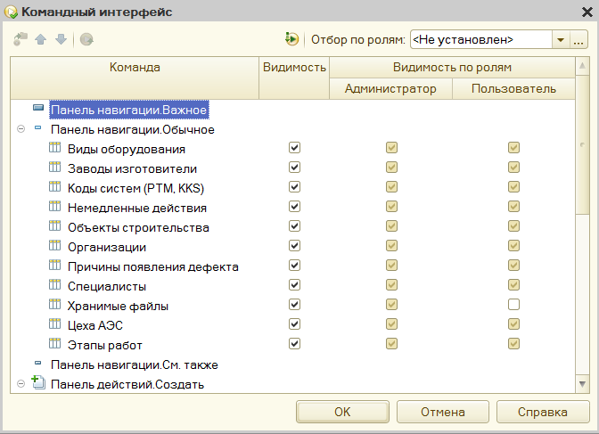

Если какой-нибудь объект метаданных включен в какую-нибудь подсистему, то ему можно назначить, какому пользователю он будет виден, какому нет.
Для этого нужно кликнуть правой кнопкой по ветке подсистемы, и выбрать "Открыть командный интерфейс".
Будет показано такое окно, где можно настроить права доступа по ролям:
